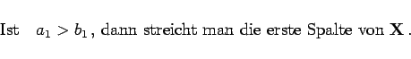

Inhalt Index DeskTop Bronstein

 Optimierung Lineare Optimierung Spezielle lineare Optimierungsprobleme Transportproblem
Optimierung Lineare Optimierung Spezielle lineare Optimierungsprobleme Transportproblem


Mit der ,,Nordwestecken-Regel`` kann immer eine erste zulässige Basislösung (Ecke) ermittelt werden:
| (18.26a) |
| (18.26b) |
|  | (18.26c) |
| (18.26d) |
Liegen nur noch eine Zeile, aber mehrere Spalten vor, dann ist eine Spalte zu streichen und umgekehrt.
 Ersetze a1 durch a1 - x11 und b1 durch b1 -x11 und wiederhole den Vorgang mit dem reduzierten Schema.
Ersetze a1 durch a1 - x11 und b1 durch b1 -x11 und wiederhole den Vorgang mit dem reduzierten Schema.
Alle bei diesem Verfahren im Schritt a) besetzten Variablen sind Basisvariable, alle anderen sind Nichtbasisvariable und erhalten den Wert 0.
| Beispiel |
|
|
Hinweis: Verfahren zur Aufstellung eines ersten Verteilungsplanes, die auch die anfallenden Transportkosten berücksichtigen (z.B. VOGELsche Approximationsmethode, s. Lit. 18.15), liefern im allgemeinen bessere Erstlösungen.